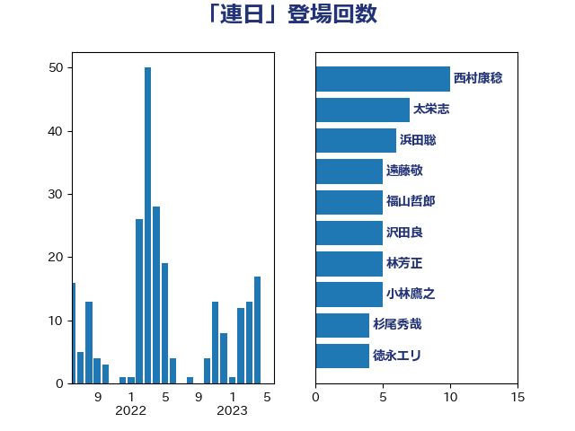

単語「連日」

| 西村康稔 | 自由民主党 | 10 回 |
| 太栄志 | 立憲民主党 | 7 回 |
| 浜田聡 | NHK党 | 6 回 |
| 遠藤敬 | 日本維新の会 | 5 回 |
| 福山哲郎 | 立憲民主党 | 5 回 |
| 沢田良 | 日本維新の会 | 5 回 |
| 林芳正 | 自由民主党 | 5 回 |
| 小林鷹之 | 自由民主党 | 5 回 |
| 杉尾秀哉 | 立憲民主党 | 4 回 |
| 徳永エリ | 立憲民主党 | 4 回 |
| 山添拓 | 日本共産党 | 4 回 |
| 城井崇 | 立憲民主党 | 4 回 |
| 青柳仁士 | 日本維新の会 | 3 回 |
| 鈴木貴子 | 自由民主党 | 3 回 |
| 鈴木敦 | 国民民主党 | 3 回 |
| 藤巻健太 | 日本維新の会 | 3 回 |
| 礒崎哲史 | 国民民主党 | 3 回 |
| 中島克仁 | 立憲民主党 | 3 回 |
| 長妻昭 | 立憲民主党 | 2 回 |
| 鎌田さゆり | 立憲民主党 | 2 回 |
| 野田国義 | 立憲民主党 | 2 回 |
| 辻清人 | 自由民主党 | 2 回 |
| 赤嶺政賢 | 日本共産党 | 2 回 |
| 若宮健嗣 | 自由民主党 | 2 回 |
| 美延映夫 | 日本維新の会 | 2 回 |
| 田村智子 | 日本共産党 | 2 回 |
| 田島麻衣子 | 立憲民主党 | 2 回 |
| 江田憲司 | 立憲民主党 | 2 回 |
| 櫻井周 | 立憲民主党 | 2 回 |
| 柳本顕 | 自由民主党 | 2 回 |
| 朝日健太郎 | 自由民主党 | 2 回 |
| 早坂敦 | 日本維新の会 | 2 回 |
| 斎藤アレックス | 国民民主党 | 2 回 |
| 打越さく良 | 立憲民主党 | 2 回 |
| 岸田文雄 | 自由民主党 | 2 回 |
| 岬麻紀 | 日本維新の会 | 2 回 |
| 山田賢司 | 自由民主党 | 2 回 |
| 小沢雅仁 | 立憲民主党 | 2 回 |
| 塩村あやか | 立憲民主党 | 2 回 |
| 坂本祐之輔 | 立憲民主党 | 2 回 |
| 北側一雄 | 公明党 | 2 回 |
| 勝部賢志 | 立憲民主党 | 2 回 |
| 伊藤渉 | 公明党 | 2 回 |
| 高橋克法 | 自由民主党 | 1 回 |
| 高市早苗 | 自由民主党 | 1 回 |
| 馬場雄基 | 立憲民主党 | 1 回 |
| 馬場伸幸 | 日本維新の会 | 1 回 |
| 音喜多駿 | 日本維新の会 | 1 回 |
| 長浜博行 | 無所属 | 1 回 |
| 鈴木義弘 | 国民民主党 | 1 回 |
| 金子恵美 | 立憲民主党 | 1 回 |
| 金城泰邦 | 公明党 | 1 回 |
| 野田聖子 | 自由民主党 | 1 回 |
| 重徳和彦 | 立憲民主党 | 1 回 |
| 赤羽一嘉 | 公明党 | 1 回 |
| 谷公一 | 自由民主党 | 1 回 |
| 西岡秀子 | 国民民主党 | 1 回 |
| 藤木眞也 | 自由民主党 | 1 回 |
| 藤岡隆雄 | 立憲民主党 | 1 回 |
| 藤井比早之 | 自由民主党 | 1 回 |
| 菊田真紀子 | 立憲民主党 | 1 回 |
| 菅義偉 | 自由民主党 | 1 回 |
| 若林健太 | 自由民主党 | 1 回 |
| 芳賀道也 | 国民民主党 | 1 回 |
| 羽田次郎 | 立憲民主党 | 1 回 |
| 穀田恵二 | 日本共産党 | 1 回 |
| 石川香織 | 立憲民主党 | 1 回 |
| 石井正弘 | 自由民主党 | 1 回 |
| 田中健 | 国民民主党 | 1 回 |
| 甘利明 | 自由民主党 | 1 回 |
| 猪瀬直樹 | 日本維新の会 | 1 回 |
| 牧義夫 | 立憲民主党 | 1 回 |
| 源馬謙太郎 | 立憲民主党 | 1 回 |
| 浜地雅一 | 公明党 | 1 回 |
| 浅野哲 | 国民民主党 | 1 回 |
| 河西宏一 | 公明党 | 1 回 |
| 武井俊輔 | 自由民主党 | 1 回 |
| 横沢高徳 | 立憲民主党 | 1 回 |
| 森田俊和 | 立憲民主党 | 1 回 |
| 森本真治 | 立憲民主党 | 1 回 |
| 森山浩行 | 立憲民主党 | 1 回 |
| 柴田巧 | 日本維新の会 | 1 回 |
| 柘植芳文 | 自由民主党 | 1 回 |
| 東徹 | 日本維新の会 | 1 回 |
| 杉久武 | 公明党 | 1 回 |
| 本庄知史 | 立憲民主党 | 1 回 |
| 末松信介 | 自由民主党 | 1 回 |
| 斉藤鉄夫 | 公明党 | 1 回 |
| 庄子賢一 | 公明党 | 1 回 |
| 工藤彰三 | 自由民主党 | 1 回 |
| 川田龍平 | 立憲民主党 | 1 回 |
| 山田勝彦 | 立憲民主党 | 1 回 |
| 山井和則 | 立憲民主党 | 1 回 |
| 小森卓郎 | 自由民主党 | 1 回 |
| 小林茂樹 | 自由民主党 | 1 回 |
| 小川淳也 | 立憲民主党 | 1 回 |
| 宮路拓馬 | 自由民主党 | 1 回 |
| 宮本徹 | 日本共産党 | 1 回 |
| 安江伸夫 | 公明党 | 1 回 |
| 守島正 | 日本維新の会 | 1 回 |
| 大野敬太郎 | 自由民主党 | 1 回 |
| 大西健介 | 立憲民主党 | 1 回 |
| 大島九州男 | れいわ新選組 | 1 回 |
| 大串正樹 | 自由民主党 | 1 回 |
| 塩田博昭 | 公明党 | 1 回 |
| 塩川鉄也 | 日本共産党 | 1 回 |
| 嘉田由紀子 | 無所属 | 1 回 |
| 吉良よし子 | 日本共産党 | 1 回 |
| 吉田はるみ | 立憲民主党 | 1 回 |
| 吉川沙織 | 立憲民主党 | 1 回 |
| 吉川元 | 立憲民主党 | 1 回 |
| 加藤勝信 | 自由民主党 | 1 回 |
| 加田裕之 | 自由民主党 | 1 回 |
| 八木哲也 | 自由民主党 | 1 回 |
| 佐藤正久 | 自由民主党 | 1 回 |
| 住吉寛紀 | 日本維新の会 | 1 回 |
| 仁比聡平 | 日本共産党 | 1 回 |
| 仁木博文 | 無所属 | 1 回 |
| 丹羽秀樹 | 自由民主党 | 1 回 |
| 丸川珠代 | 自由民主党 | 1 回 |
| 中西祐介 | 自由民主党 | 1 回 |
| 上田勇 | 公明党 | 1 回 |
| 上川陽子 | 自由民主党 | 1 回 |
| おおつき紅葉 | 立憲民主党 | 1 回 |